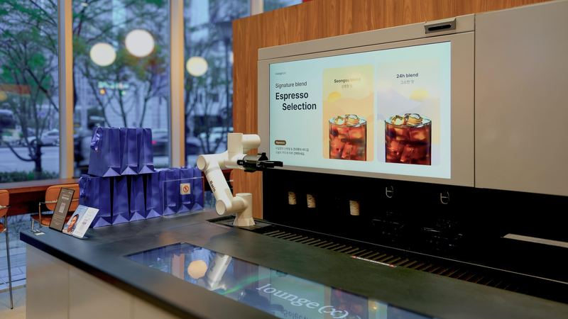
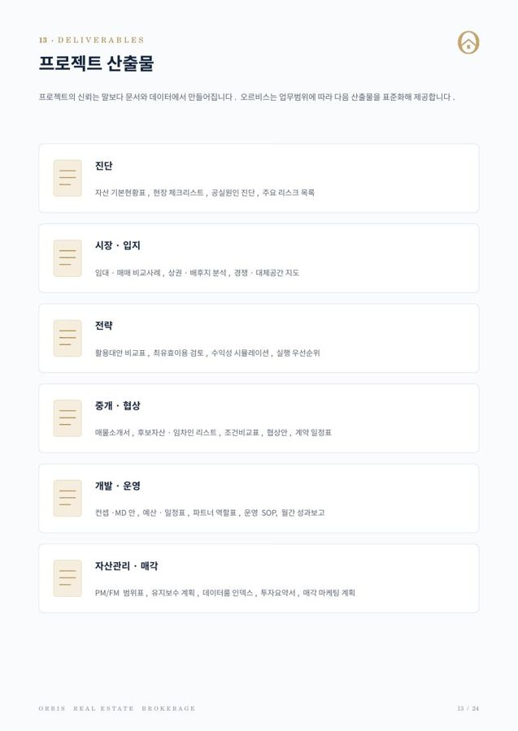
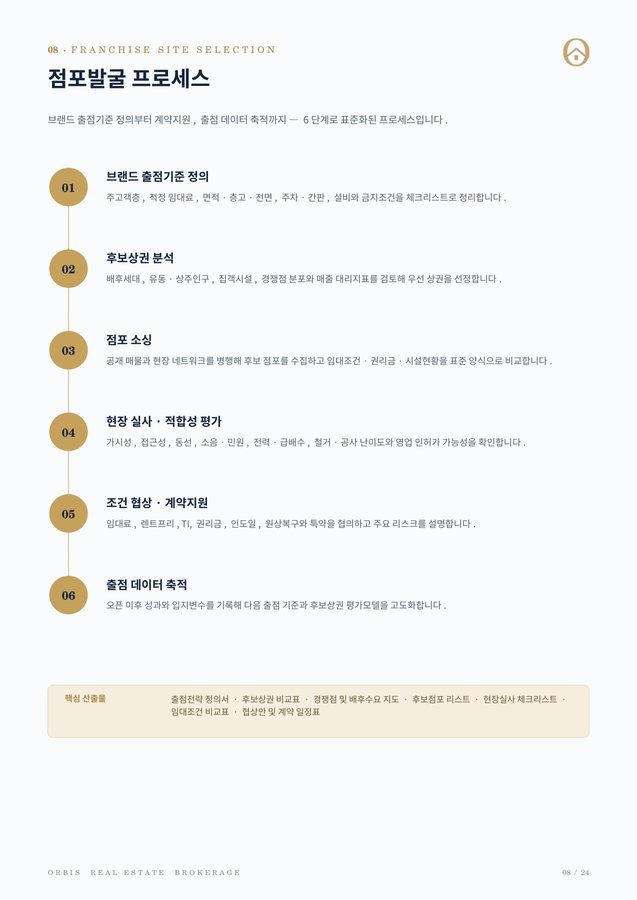
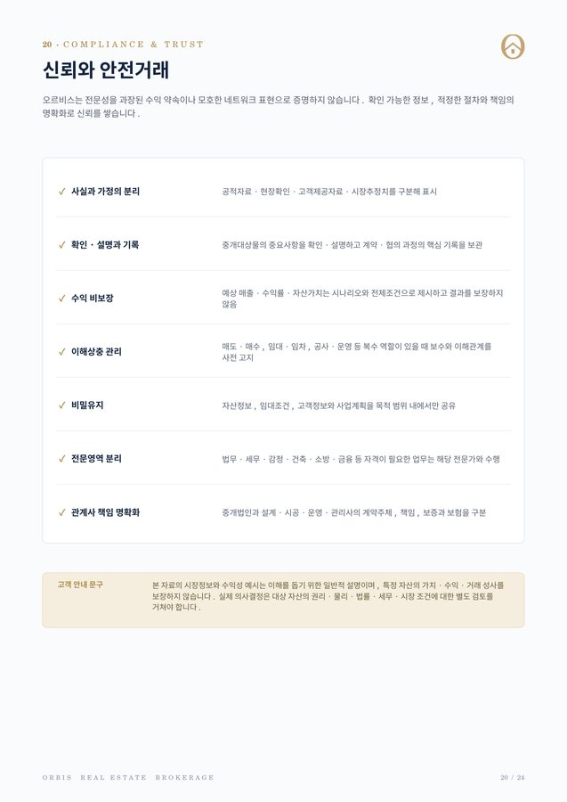
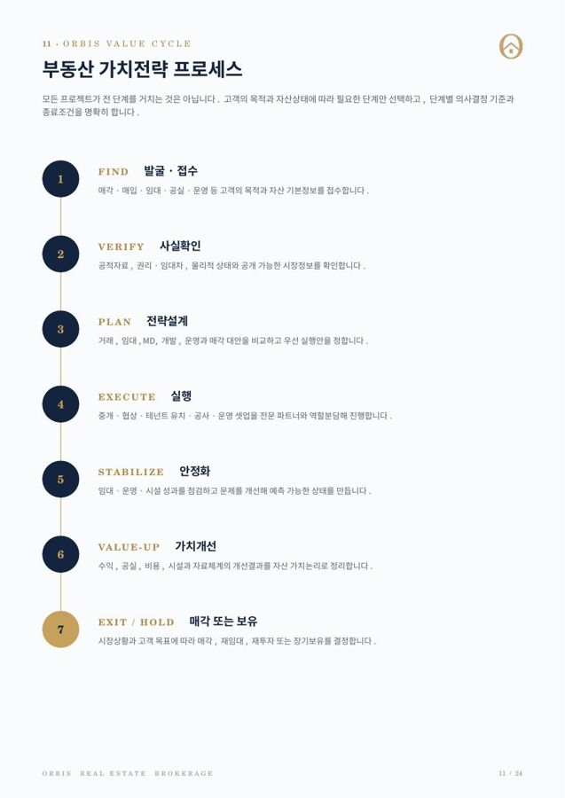

PHOTO · 공개 승인 후 게시공실개발 · 운영
도심 상권 내 4개층 장기 공실을 공간 운영모델로 전환
수요·층별 구조를 진단해 공간대여형 모델을 설계하고, 구축·운영 셋업으로 월별 운영데이터를 축적하는 구조를 만들었습니다.
관계사·핵심 파트너 수행사례 보기
Seoul · Real Estate Value Strategy
강남 테헤란로의 부동산 중개법인 오르비스는 중소형 빌딩·상가·오피스의 매매·임대차를 중심으로, 상권분석 시스템 기반의 점포개발·출점 전략과 MD·공실개발·자산관리·매각전략까지 연결합니다.
NEW주소만 넣으면 반경 상권을 바로 보는 상권분석 시스템Brand Partners
라운지엑스는 공식 파트너사이며, 그 밖의 브랜드는 점포개발·출점 업무를 함께하는 협력 브랜드입니다. 브랜드명과 상표의 권리는 각 권리자에게 있습니다.
Where do you stand
방문 목적에 따라 필요한 진단과 상담이 다릅니다. 가장 가까운 항목을 선택하세요.
임차인이 구해지지 않고 관리비·금융비용 부담이 계속됩니다.
건물 1차 진단지금 팔아야 할지, 정리하고 팔아야 할지 기준이 필요합니다.
매각·임대 방향 상담권리·임대 리스크와 개선 여지를 확인하고 싶습니다.
맞춤 딜 요청사업에 맞는 입지·조건·설비의 공간이 필요합니다.
점포·공간 의뢰출점기준 정립과 후보점포 소싱 체계가 필요합니다.
출점 브리프 제출임대·수납·시설 관리를 체계적으로 맡기고 싶습니다.
자산관리 알아보기Retail Intelligence · New
오르비스는 공공데이터 기반의 상권분석 시스템을 직접 운영합니다. 후보 입지의 점포 구성과 경쟁, 유동·배후 인구, 임대료와 실거래를 한 화면에서 비교하고, 그 결과로 고객사 브랜드에 맞는 입지와 출점 순서, 점포 계약과 오픈 일정까지 자문합니다.
Core Solutions
필요한 서비스만 선택하거나, 자산의 전 생애주기를 하나의 프로젝트로 연결할 수 있습니다.
중소형 빌딩 매매·매입자문, 임대차·테넌트 자문, 조건 협상과 거래 절차 관리
솔루션 상세최유효이용·사업성 검토, MD·테넌트 구성, 활용대안 비교
솔루션 상세공실 진단, 활용모델 설계, 공간·브랜드 구축, 운영시스템 셋업과 운영지원
솔루션 상세임대 안정화, PM·FM 연계, 데이터룸 정리, 매각전략과 매수자 매칭
솔루션 상세Store Development · Partnership
브랜드마다 출점 기준이 다릅니다. 오르비스는 협력 브랜드의 기준을 알고 움직이기 때문에, 브랜드 본사에는 기준에 맞는 후보 점포를, 건물주에게는 공간 조건에 맞는 브랜드 검토를 제안할 수 있습니다.

OFFICIAL PARTNER 매장 영상 3편바리스타 로봇이 음료를 만드는 로봇카페 브랜드 라운지엑스. 출점 후보지 발굴과 상권분석을 오르비스가 함께하고 있습니다.
라운지엑스 파트너 페이지Orbis Value Cycle
모든 프로젝트가 전 단계를 거치는 것은 아닙니다. 고객의 목적과 자산 상태에 따라 필요한 단계만 선택하고, 단계별 의사결정 기준과 종료조건을 명확히 합니다.
Projects
수요·층별 구조를 진단해 공간대여형 모델을 설계하고, 구축·운영 셋업으로 월별 운영데이터를 축적하는 구조를 만들었습니다.
출점기준을 체크리스트로 정의하고 배후세대·경쟁 분포를 정량 비교해 기준에 맞는 점포의 임대차계약 체결을 지원했습니다.
오르비스 법인이 직접 수행한 거래 사례는 고객 공개 승인 절차를 거쳐 순차적으로 게시합니다. 가상의 사례로 채우지 않습니다.
일부 사례는 오르비스 법인 설립 전 관계사·핵심 파트너의 수행 경험이며, 각 사례에 수행주체를 표기합니다. 실제 실적·고객·주소·수익을 임의로 만들지 않습니다.
Deliverables
오르비스는 업무범위에 따라 표준화된 문서와 데이터를 제공합니다. 아래는 회사소개서에서 발췌한 실제 자료 예시입니다. (민감정보 제외)




Insights
시장동향부터 투자, 상권분석, 계약·법률, 자산관리까지 실무 기준으로 정리합니다. 새 글은 매일 오전 11시에 올라옵니다.
꼬마빌딩 대출을 받기 전에 LTV, DSCR, RTI가 각각 무엇을 재는지와 계산 방법을 정리했습니다. 기준금리 3.00% 시기 금리 변동에 따른 이자 민감도 표, 감당 가능한 대출액 역산법, 금융기관에 묻기 전 점검표를 계산 예시(가정)로 담았습니다.
상가 계약갱신요구권을 언제, 어떤 방식으로 행사해야 하는지와 임대인이 갱신을 거절할 수 있는 8가지 사유를 조문과 대법원 판례 기준으로 정리했습니다. 3기 연체 이력, 재건축 고지, 묵시적 갱신과의 차이, 일정 계산표와 대응 체크리스트를 담았습니다.
역세권 상가를 고를 때 역과의 거리보다 먼저 봐야 할 출구별 이용 성격, 출근·퇴근 방향, 횡단보도와 버스정류장 위치를 현장에서 확인하는 방법과 출구별 관찰 기록표, 후보 점포 비교 기준을 정리했습니다.
FAQ
빌딩·상가 거래부터 상권분석, 공실 고민까지 상담 전에 많이 받는 질문을 모았습니다.
서울 강남구 테헤란로에 사무소를 둔 부동산 중개법인입니다(중개사무소 개설등록번호 11680-2025-00157). 중소형 빌딩·상가·오피스의 매매와 임대차 중개를 중심으로, 상권분석 시스템을 활용한 점포개발·프랜차이즈 출점 자문, 공실개발과 MD, 자산관리·매각전략 자문을 함께 맡습니다.
상권분석 시스템은 회원가입 없이 무료로 쓸 수 있습니다. 주소를 넣으면 반경 300m·500m·1km 안의 점포 구성과 업종 경쟁, 층별 임대료 참고값, 주변 상업용 실거래를 보여 드리고, 서울은 유동·배후 인구 같은 상권 지표도 함께 제공합니다.
출점 기준을 정리하는 단계부터 후보상권 분석, 점포 소싱, 현장 실사, 조건 협상·계약, 오픈 후 데이터 축적까지 6단계로 점포 발굴을 돕습니다. 다점포 확장 순서와 오픈 일정은 브랜딩·확장·오픈 전략 자문에서 함께 다룹니다.
중개보수는 공인중개사법령이 정한 상한 안에서 계약 전에 협의해 정합니다. 자문이 필요한 경우 업무 범위와 비용을 먼저 협의한 뒤 진행합니다. 설계·시공·운영 같은 실행 업무는 관계사나 외부 전문기관이 별도 계약으로 맡으며, 계약 주체와 책임 범위를 미리 알려 드립니다.
전화(010-7379-5265)나 카카오톡, 상담 문의 양식으로 신청하실 수 있습니다. 평일 10:00–18:00에 운영하며, 이 시간에 접수하시면 당일, 그 밖에는 다음 영업일에 1차 회신드립니다.
자산의 현재 상태와 가능한 선택지를 먼저 확인하십시오. 주소와 기본자료를 남겨주시면 오르비스가 우선 검토 방향과 다음 상담에 필요한 자료를 안내합니다.
010-7379-5265